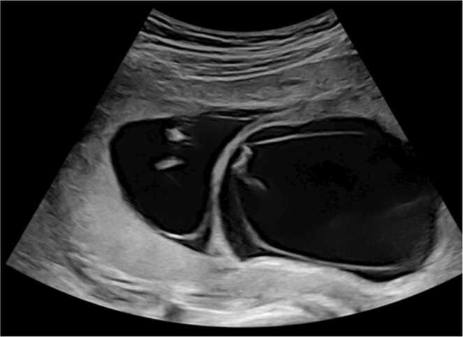
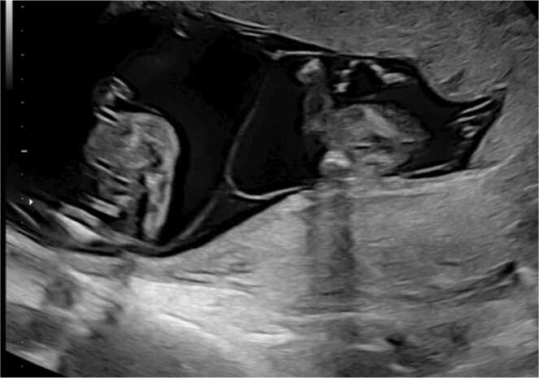
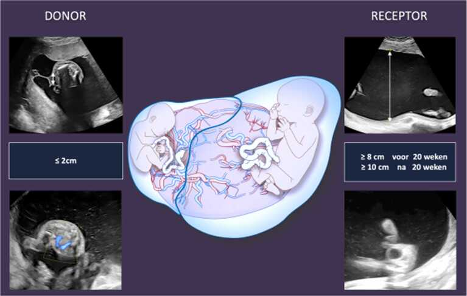
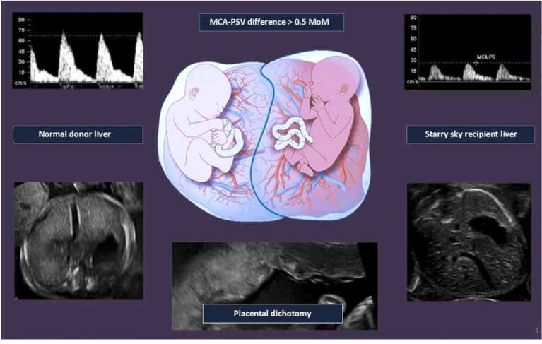
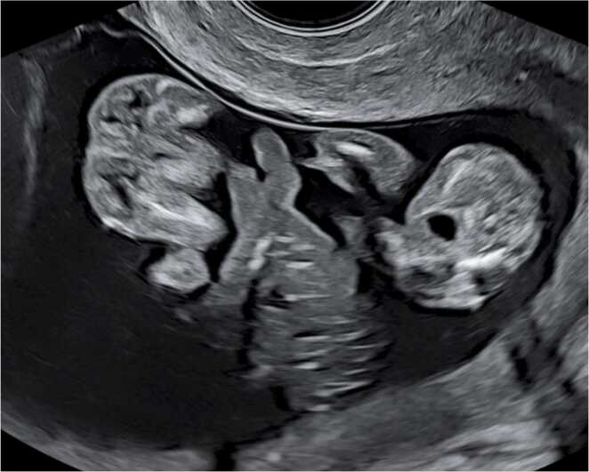
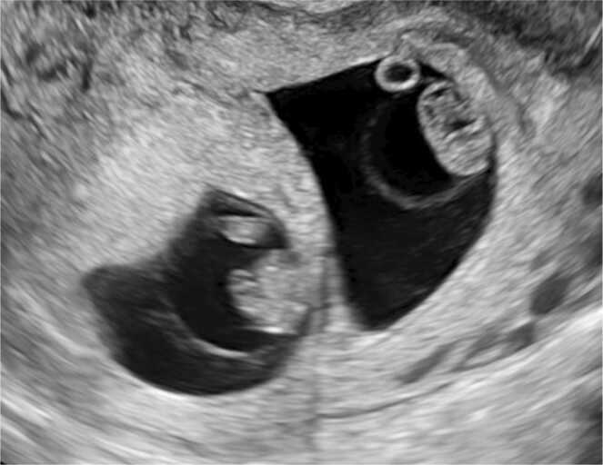

566 — Song thai: xác định màng đệm–màng ối & hội chứng truyền máu (TTTS/TAPS)
Tags: pattern:song-thai vung:thai-nhi vung:banh-nhau score:Quintero score:TAPS protocol:SA-thai protocol:Doppler-MCA
Mức chắc chắn (certainty): tổng hợp y văn (literature synthesis) — số liệu lấy từ hướng dẫn VVOG 2025, tiêu chuẩn Quintero và phân độ TAPS; ảnh là hình minh họa từ bài tổng quan có bản quyền mở, không phải ca nguyên văn của nhóm.
1. Tổng quan bệnh học – cơ chế hình ảnh
1.1. Hai câu hỏi phải trả lời trước mọi thứ khác
- Màng đệm (chorionicity): một bánh nhau (monochorionic, MC) hay hai bánh nhau (dichorionic, DC)?
- Màng ối (amnionicity): hai buồng ối (diamniotic, DA) hay một buồng ối (monoamniotic, MA)?
Hai câu này không đồng nghĩa với hợp tử (zygosity):
- Mọi thai MC đều là một hợp tử (monozygotic) — vì tách rất muộn, sau khi màng đệm đã hình thành.
- Thai DC có thể là hai hợp tử (dizygotic, khoảng 2/3 các ca song thai) hoặc một hợp tử tách sớm (khoảng 25–30% cặp sinh đôi một hợp tử là DC).
- Vì vậy không được suy chorionicity từ giới tính: hai thai khác giới chắc chắn DC, nhưng hai thai cùng giới có thể DC hoặc MC.
Quy luật phát triển:
- DC luôn luôn DA (hai màng đệm, hai màng ối).
- MC có thể DA (MCDA, thường gặp) hoặc MA (MCMA, hiếm, khoảng 1% thai MC).
1.2. TẠI SAO màng giữa trông khác nhau trên siêu âm
- Thai DC: giữa hai buồng ối có bốn lớp: màng ối thai 1 – màng đệm – màng ối thai 2. Màng đệm là mô nuôi (trophoblast) dày, nhiều mạch, nên hồi âm dày và sáng. Chỗ màng này cắm vào bánh nhau tạo hình chữ lambda đầy đủ (full lambda sign / twin peak sign).
- Thai MCDA: chỉ có hai lớp màng ối áp vào nhau, không có màng đệm ở giữa. Màng rất mỏng, cắm vào bánh nhau tạo hình chữ T (T sign) — còn gọi là lambda rỗng (empty lambda sign).
- Thai MCMA: không có vách giữa; hai thai nằm chung một buồng ối.
Vì sao phải làm trước 13 tuần 6 ngày: ở tuổi thai này màng ối và màng đệm còn tách biệt, nhìn được rõ thành phần. Sau 13+6 tuần, hai màng áp sát và mỏng dần; ở cặp cùng giới, phân biệt DC với MC thường không thể chắc chắn. Trước 11 tuần, cách đọc lại dựa vào số túi thai và khoang màng đệm (exocoelomic cavity): DC có hai túi riêng, mỗi thai và túi noãn hoàng trong một khoang; MC có một túi chung.
Cạm bẫy vật lý: số bánh nhau không đáng tin (bánh nhau MC có thể hai thùy — bilobed), số túi noãn hoàng cũng không đáng tin cho amnionicity. Chỉ có toàn bộ vách giữa mới là tiêu chuẩn.
1.3. Vì sao MC nguy hiểm: nối mạch máu bánh nhau
Thai MC dùng chung một bánh nhau và có các nối mạch (anastomoses):
- Động mạch–động mạch (A-A) và tĩnh mạch–tĩnh mạch (V-V): thường cân bằng.
- Động mạch–tĩnh mạch (A-V): máu từ động mạch của thai cho chảy qua bánh nhau sang tĩnh mạch của thai nhận — không cân bằng.
Hệ quả:
- TTTS (twin-to-twin transfusion syndrome): truyền máu thể tích qua các nối A-V lớn, không cân bằng → thai cho (donor) thiểu thể tích, thiểu ối, bàng quang xẹp; thai nhận (recipient) quá tải thể tích, đa ối, bàng quang căng, suy tim, phù.
- TAPS (twin anemia-polycythemia sequence): chỉ có các nối rất nhỏ, truyền hồng cầu chậm → thai cho thiếu máu, thai nhận đa hồng cầu, lượng ối có thể bình thường. Vì vậy TAPS không loại trừ được bằng ối bình thường.
- sIUGR (selective fetal growth restriction): chia sẻ bánh nhau không đều → một thai < bách phân vị 10, chênh cân nặng > 25%.
1.4. Cơ chế vật lý của các dấu hiệu Doppler
- MCA-PSV (peak systolic velocity động mạch não giữa): khi thiếu máu, độ quánh máu giảm và cung lượng tim bù trừ tăng → tốc độ đỉnh tăng. Khi đa hồng cầu, độ quánh tăng → tốc độ đỉnh giảm. Đây là lý do MCA-PSV dùng để chẩn đoán TAPS mà không cần lấy máu thai.
- Bánh nhau hai màu (placental dichotomy): phần bánh của thai cho thiếu máu nên sáng hơn; phần của thai nhận ứ máu nên tối hơn.
- Gan "trời sao" (starry sky liver) ở thai nhận: gan ứ máu, nhu mô gan tối, các tiểu tĩnh mạch còn sáng lấm tấm.
1.5. Ngưỡng định lượng phải nhớ
- Tỷ lệ MC: ~20% tổng số song thai — nhóm nguy cơ cao.
- TTTS: 1/10 thai MC, thường 16–26 tuần — cấp cứu sản khoa.
- TAPS: ~1/20 thai MC, thường sau 26 tuần — dễ bỏ sót vì ối bình thường.
- Thai chết một bên trong MC: 50% thai còn lại chết, 35% tổn thương não.
- Sinh đủ tháng: DC 37+0–37+6; MC 36+0–36+6.
- Cổ tử cung: ≤ 25 mm trước 24 tuần là ngưỡng nguy cơ sinh non.
2. Mẫu hình + chẩn đoán phân biệt theo vị trí (gamut)
2.1. Mẫu hình theo tuổi thai
- < 8 tuần: đếm túi thai và khoang màng đệm. Hai túi riêng → DC. Một túi chung → MC (nhưng chưa xác định được amnionicity vì màng ối chưa hiện rõ trước 8 tuần).
- 8–10 tuần: màng ối bắt đầu thấy; đếm túi noãn hoàng chỉ để tham khảo, không dùng để chốt amnionicity.
- 11+0–13+6 tuần: thời điểm chuẩn — nhìn toàn bộ vách giữa từ bánh nhau đến thành tử cung:
- Lambda đầy đủ → DC/DA.
- T sign → MC/DA.
- Không có vách → MC/MA.
- > 14 tuần: dùng giới tính, hình thái, nhưng ở cặp cùng giới không được đoán DC/MC; chuyển trung tâm chuyên sâu.
2.2. Gamut "một ối nhiều, một ối ít" ở song thai
- TTTS — bắt buộc có chuỗi thiểu ối/đa ối, bàng quang hai thai lệch nhau.
- sIUGR — thường ối bình thường hoặc thai nhỏ thiểu ối nhẹ, không có chuỗi đa ối ở thai lớn.
- TAPS — ối bình thường; chìa khóa là MCA-PSV lệch.
- Đa ối đơn thuần (isolated polyhydramnios) — bàng quang hai thai đều thấy, không thiểu ối bên kia.
- Vỡ ối non (PPROM) — bệnh sử rỉ ối, màng ối tách khỏi thành tử cung, có thể thấy "màng treo".
- Dị tật cấu trúc — teo thực quản, không sọ, thoát vị hoành gây đa ối một bên.
- Đái tháo đường mẹ — đa ối hai bên, không lệch bàng quang.
2.3. Gamut "chênh cân nặng" ở song thai
- sIUGR (MC hoặc DC): EFW < bách phân vị 10 + chênh > 25%.
- TTTS: chênh cân nặng thường có nhưng không bắt buộc; chẩn đoán dựa vào ối.
- TAPS: cân nặng có thể gần bằng nhau.
- Bất thường nhiễm sắc thể ở một thai: chênh cân nặng + dị tật/dấu hiệu mềm.
- Nhiễm trùng bào thai (CMV, toxoplasma): chênh cân nặng + canxi hóa não, gan lách to.
- Bánh nhau bám thấp/thiểu sản một phần: chênh cân nặng đơn thuần.
2.4. Gamut "một thai chết trong tử cung"
- MC: thai còn lại có thể mất máu cấp vào tuần hoàn thai chết → chết (50%) hoặc tổn thương não (35%). Cần đánh giá MCA-PSV ngay và MRI não sau 2–3 tuần.
- DC: nguy cơ cho thai còn lại chủ yếu do sinh non/tiền sản giật, không do truyền máu cấp.
- TRAP (twin reversed arterial perfusion): thai không có tim (acardiac) được nuôi ngược dòng bởi thai bình thường; Doppler thấy dòng đảo chiều trong động mạch rốn của khối acardiac.
3. Bảng so sánh phân biệt (ma trận đối chiếu)
| Thực thể (entity) | Hình ảnh điển hình (US) | Chốt vào (rule-in) | Chốt loại (rule-out) | Gợi ý xác nhận |
|---|---|---|---|---|
| Song thai DC/DA | Vách dày 4 lớp, lambda đầy đủ, hai bánh nhau (không bắt buộc) | Lambda đầy đủ + vách dày, thấy màng đệm giữa hai màng ối | Vách chỉ 2 lá mỏng, T sign → MC | Quét toàn bộ vách 11+0–13+6; transvaginal nếu khó |
| Song thai MC/DA | Vách mỏng 2 lá, T sign, một bánh nhau | T sign + một bánh nhau + cùng giới | Vách dày có màng đệm → DC | Theo dõi 2 tuần/lần từ 16 tuần |
| Song thai MC/MA | Không vách, hai thai một buồng ối, dây rốn quấn nhau | Không thấy vách giữa trên mọi mặt cắt | Có vách mảnh → MCDA | Transvaginal xác nhận; theo dõi như MA |
| TTTS | Thai cho: DVP ≤ 2 cm, bàng quang xẹp; thai nhận: DVP ≥ 8 cm (< 20 tuần) hoặc ≥ 10 cm (≥ 20 tuần), bàng quang căng, có thể phù | Chuỗi thiểu ối + đa ối + bàng quang lệch | Hai ối bình thường, bàng quang đều thấy → không TTTS | Quintero; Doppler UA, DV, MCA |
| TAPS | Ối bình thường; bánh nhau hai màu, gan thai nhận "trời sao" | **MCA-PSV cho > 1,5 MoM và nhận < 1,0 MoM** (hoặc chênh > 1,0 MoM) | MCA-PSV hai thai bình thường → loại TAPS | Doppler MCA-PSV; xét nghiệm máu rốn sau sinh |
| sIUGR | Một thai nhỏ, ối thường bình thường; Doppler UA thay đổi theo type | EFW < bách phân vị 10 + chênh > 25% | Hai thai tăng trưởng đều, Doppler bình thường | Phân type I–III theo UA |
| MCMA | Không vách, dây rốn quấn, nguy cơ chèn ép dây rốn | Không vách + dây rốn quấn | Có vách → MCDA | Theo dõi sát, sinh 32–34 tuần |
3.1. Ảnh minh họa vách giữa

Lambda đầy đủ (full lambda sign) ở thai DC khoảng 12 tuần: vách dày, có lớp màng đệm sáng ở giữa. Nguồn: Heijden SV et al., Eur J Obstet Gynecol Reprod Biol X 2025 (PMC12304725), CC BY-NC-ND 4.0 — nguyên bản, không cắt/ghép.
T sign (lambda rỗng) ở thai MCDA 13 tuần: vách chỉ gồm hai lá màng ối mỏng, cắm vuông góc vào bánh nhau. Nguồn: Heijden SV et al., PMC12304725, CC BY-NC-ND 4.0 — nguyên bản.3.2. Dấu hiệu chốt trong 3 giây
- Vách dày + chữ lambda = DC. Vách mỏng + chữ T = MC.
- Không vách = MA.
- Thiểu ối/đa ối = TTTS. MCA-PSV lệch = TAPS. EFW lệch = sIUGR.
4. Protocol chụp + hệ phân độ/điểm chuẩn hóa
4.1. Protocol
- Lần 1 (11+0–13+6 tuần): xác định chorionicity/amnionicity, đánh dấu thai A/B theo vị trí, đo CRL thai lớn nhất (thai tự nhiên), NT, xương mũi, ống tĩnh mạch, hồi lưu van ba lá, hình thái sớm.
- Thai DC không biến chứng: siêu âm 12, 16, 20, 24, 28, 32, 34, 36 tuần.
- Thai MC không biến chứng: siêu âm mỗi 2 tuần từ 16 tuần; mỗi lần đo DVP, bàng quang, Doppler động mạch rốn, MCA-PSV, ống tĩnh mạch, EFW, cổ tử cung.
- Đo cổ tử cung transvaginal 18–24 tuần, ngưỡng ≤ 25 mm.
- Khi nghi TTTS/TAPS: chuyển trung tâm có khả năng laser; đánh giá nhau, dây rốn, tim thai, phù, cổ tử cung.
4.2. Phân độ Quintero (TTTS)
| Giai đoạn | Tiêu chuẩn |
|---|---|
| I | DVP ≤ 2 cm ở thai cho và ≥ 8 cm (< 20 tuần) hoặc ≥ 10 cm (≥ 20 tuần) ở thai nhận; bàng quang thai cho còn thấy |
| II | Bàng quang thai cho không thấy |
| III | Doppler bất thường: UA mất/đảo cuối tâm trương, DV đảo sóng a, tĩnh mạch rốn đập |
| IV | Phù thai |
| V | Một hoặc hai thai tử vong |
flowchart TD
A[Song thai 11+0–13+6] --> B{Vách giữa?}
B -->|Dày, lambda đầy đủ| C[DC/DA: theo dõi 4 tuần]
B -->|Mỏng, T sign| D[MC/DA]
B -->|Không vách| E[MC/MA: theo dõi sát, sinh 32–34 tuần]
D --> F[Siêu âm mỗi 2 tuần từ 16 tuần]
F --> G{DVP hai thai?}
G -->|Cho ≤ 2 cm + nhận ≥ 8–10 cm| H[TTTS]
G -->|Bình thường| I{MCA-PSV?}
H --> J{Quintero}
J -->|I| K[Theo dõi sát hoặc laser nếu có yếu tố xấu]
J -->|II–IV| L[Laser nội soi 16–26 tuần]
J -->|V| M[Tư vấn, xử trí thai lưu]
I -->|Cho > 1,5 và nhận < 1,0 MoM| N[TAPS: phân độ 1–5]
I -->|Bình thường| O{EFW < BP10 và lệch > 25%?}
O -->|Có| P[sIUGR type I–III]
O -->|Không| F
4.3. Phân độ TAPS (Slaghekke)
| Giai đoạn | Tiêu chuẩn |
|---|---|
| 1 | MCA-PSV thai cho > 1,5 MoM và thai nhận < 1,0 MoM** (hoặc chênh **> 1,0 MoM), không dấu hiệu khác |
| 2 | MCA-PSV thai cho > 1,7 MoM |
| 3 | MCA-PSV thai cho > 2,0 MoM |
| 4 | Phù thai |
| 5 | Tử vong |
- Hướng dẫn VVOG 2025 dùng thêm tiêu chuẩn chênh MCA-PSV ≥ 0,5 MoM kèm bánh nhau hai màu và/hoặc gan "trời sao" ở thai nhận.
- TAPS có thể xuất hiện sau laser TTTS (khoảng 13–16%), nên vẫn phải theo dõi MCA-PSV sau điều trị.
4.4. Phân type sIUGR (Gratacós)
- Type I: Doppler động mạch rốn bình thường.
- Type II: UA mất cuối tâm trương (AEDF) liên tục.
- Type III: UA mất/đảo cuối tâm trương từng lúc (iAREDF) — nguy cơ thai lưu đột ngột, cần theo dõi sát.
4.5. Điều trị và thời điểm sinh
- TTTS Quintero II–IV: laser đốt nối mạch là điều trị chuẩn, tốt nhất 16–26 tuần. Sống cả hai thai ~65%, sống ít nhất một thai ~85%.
- TTTS Quintero I: theo dõi sát; cân nhắc laser nếu cổ tử cung ≤ 25 mm, đa ối gây khó thở, phù, Doppler bất thường.
- TAPS: giai đoạn 1 theo dõi; giai đoạn 2–4 cân nhắc truyền máu trong tử cung (IUT), laser hoặc sinh tùy tuổi thai.
- MCMA: theo dõi sát, sinh 32–34 tuần sau corticosteroid.
- Thai MC không biến chứng: sinh 36+0–36+6; DC: 37+0–37+6.
- Một thai chết trong MC: đánh giá cấp cứu thai còn lại (MCA-PSV, tim, não); MRI não sau 2–3 tuần.
5. Biến thể bình thường và cạm bẫy
- Đếm bánh nhau: bánh nhau MC có thể hai thùy, trông như hai bánh → đừng chẩn đoán DC chỉ vì "hai bánh".
- Đếm túi noãn hoàng: MCDA thường có hai túi noãn hoàng; thấy hai túi không loại trừ MC.
- T sign giả: nếu vách DC rất mỏng hoặc cắt không vuông góc, màng đệm có thể bị che → luôn quét toàn bộ vách, dùng đầu dò tần số cao/transvaginal khi nghi ngờ.
- Lambda giả: túi ối phụ hoặc màng ối tách rời có thể tạo hình chữ lambda không thật.
- Sau 13+6 tuần ở cặp cùng giới: không được chốt DC/MC bằng mắt thường; chuyển chuyên gia.
- TTTS vs sIUGR: sIUGR không có chuỗi đa ối/thiểu ối điển hình; ngược lại TTTS có thể kèm sIUGR (thể phối hợp) — đừng bỏ qua Doppler UA.
- TAPS với ối bình thường: đây là cạm bẫy lớn nhất; phải đo MCA-PSV mỗi lần theo dõi MC, kể cả khi ối bình thường.
- PPROM giả thiểu ối: hỏi bệnh sử rỉ ối, tìm màng ối tách khỏi thành tử cung; đừng chẩn đoán TTTS khi chỉ có một bên thiểu ối.
- Đa ối đơn thuần: bàng quang hai thai đều thấy, không có chuỗi thiểu ối → không phải TTTS.
- MCMA: dây rốn quấn nhau là bình thường, không đồng nghĩa suy thai; theo dõi bằng Doppler và tim thai.
- Thai chết một bên: đừng chỉ khám thai còn lại bằng tim thai; phải đo MCA-PSV và đánh giá não.
6. Tự lượng giá — Blind Quiz
Ca 1 — Thai 12 tuần, hai thai cùng giới, ảnh mặt cắt qua vách giữa:
- Gợi ý: không có bất thường ối, không có chênh cân nặng.
- Hỏi: Vách giữa gồm mấy lớp? Chẩn đoán chorionicity? Kế hoạch theo dõi?
Bấm để hiện đáp án (findings + chẩn đoán)
- Findings: vách giữa dày, thấy lớp màng đệm sáng ở giữa, cắm vào bánh nhau tạo lambda đầy đủ.
- Chẩn đoán: song thai DC/DA (hai bánh nhau, hai buồng ối).
- Vì sao: vách 4 lớp (amnion–chorion–amnion) → màng đệm còn giữa hai màng ối; đây là dấu hiệu chốt của DC ở 11+0–13+6 tuần.
- Theo dõi: DC không biến chứng — siêu âm 12, 16, 20, 24, 28, 32, 34, 36 tuần; sinh 37+0–37+6.
- Nguồn ảnh: Heijden SV et al., Eur J Obstet Gynecol Reprod Biol X 2025 (PMC12304725), CC BY-NC-ND 4.0.
Ca 2 — Thai 13 tuần, hai thai cùng giới, vách giữa rất mỏng:
- Gợi ý: một bánh nhau, không thấy màng đệm giữa hai màng ối.
- Hỏi: Chẩn đoán? Nguy cơ chính? Lịch theo dõi?
Bấm để hiện đáp án (findings + chẩn đoán)
- Findings: vách chỉ gồm hai lá màng ối mỏng, cắm vuông góc vào bánh nhau (T sign); một bánh nhau.
- Chẩn đoán: song thai MC/DA.
- Nguy cơ: TTTS (
1/10), TAPS (1/20), sIUGR, dị tật, thai lưu một bên (nguy cơ cho thai còn lại 50% chết, 35% tổn thương não). - Theo dõi: siêu âm mỗi 2 tuần từ 16 tuần, đo DVP, bàng quang, UA, MCA-PSV, DV, EFW; sinh 36+0–36+6.
- Nguồn ảnh: Heijden SV et al., PMC12304725, CC BY-NC-ND 4.0.
Ca 3 — Thai 22 tuần, MC, một thai thiểu ối nặng, thai kia đa ối:

- Gợi ý: bàng quang thai cho không thấy; Doppler UA bình thường.
- Hỏi: Chẩn đoán? Phân độ? Điều trị?
Bấm để hiện đáp án (findings + chẩn đoán)
- Findings: thai cho (donor) DVP ≤ 2 cm, bàng quang không thấy; thai nhận (recipient) DVP ≥ 10 cm (sau 20 tuần), bàng quang căng.
- Chẩn đoán: TTTS Quintero II (có chuỗi ối + bàng quang cho không thấy, chưa có Doppler bất thường).
- Điều trị: laser đốt nối mạch (16–26 tuần) là lựa chọn chuẩn cho giai đoạn II–IV; chuyển trung tâm chuyên sâu.
- Vì sao: nối A-V không cân bằng → giảm thể tích tuần hoàn thai cho (thiểu ối, bàng quang xẹp), tăng thể tích thai nhận (đa ối).
- Nguồn ảnh: Heijden SV et al., PMC12304725, CC BY-NC-ND 4.0.
Ca 4 — Thai 30 tuần, MC, ối bình thường, Doppler MCA:

- Gợi ý: không thiểu ối, không đa ối; một thai nhợt, một thai đỏ.
- Hỏi: Dấu hiệu chốt? Chẩn đoán? Vì sao ối bình thường không loại trừ?
Bấm để hiện đáp án (findings + chẩn đoán)
- Findings: MCA-PSV thai cho > 1,5 MoM, thai nhận **< 1,0 MoM** (chênh > 1,0 MoM); bánh nhau hai màu (phần cho sáng, phần nhận tối); gan thai nhận "trời sao".
- Chẩn đoán: TAPS (twin anemia-polycythemia sequence).
- Vì sao ối bình thường: nối mạch trong TAPS rất nhỏ, chỉ truyền hồng cầu từ từ — không gây lệch thể tích/ối như TTTS.
- Xử trí: phân độ 1–5; giai đoạn 1 theo dõi, giai đoạn 2–4 cân nhắc IUT/laser/sinh tùy tuổi thai.
- Nguồn ảnh: Heijden SV et al., PMC12304725, CC BY-NC-ND 4.0.
Ca 5 — Thai 13 tuần, không thấy vách giữa, hai dây rốn quấn nhau:

- Gợi ý: một bánh nhau, một buồng ối.
- Hỏi: Chẩn đoán? Nguy cơ? Thời điểm sinh?
Bấm để hiện đáp án (findings + chẩn đoán)
- Findings: không có vách giữa trên mọi mặt cắt; hai thai trong một buồng ối; dây rốn quấn nhau.
- Chẩn đoán: song thai MC/MA.
- Nguy cơ: chèn ép dây rốn, thai lưu đột ngột, sinh non; dây rốn quấn là bình thường nhưng cần theo dõi sát.
- Xử trí: theo dõi chuyên sâu, corticosteroid, sinh 32–34 tuần.
- Nguồn ảnh: Heijden SV et al., PMC12304725, CC BY-NC-ND 4.0.
Ca 6 — Thai 9 tuần, hai túi thai riêng:

Bấm để hiện đáp án
- Findings: hai túi thai riêng, mỗi thai và túi noãn hoàng trong một khoang màng đệm riêng.
- Chẩn đoán: DC/DA — nhưng vẫn phải xác nhận lại bằng vách giữa ở 11+0–13+6 tuần.
- Nguồn ảnh: Heijden SV et al., PMC12304725, CC BY-NC-ND 4.0.
Bài liên quan chéo
- 500 – Tổng quan Hệ Vú & Sản Phụ khoa
- 550 – Thai sớm, sẩy thai & thai ngoài tử cung
- 560 – Nhau cài răng lược & nhau bong non
- 565 – Sàng lọc hình thái thai & Doppler sản khoa
- 567 – Sàng lọc lệch bội: NIPT & dấu hiệu mềm
Không dùng để chẩn đoán độc lập khi chưa có người hướng dẫn.